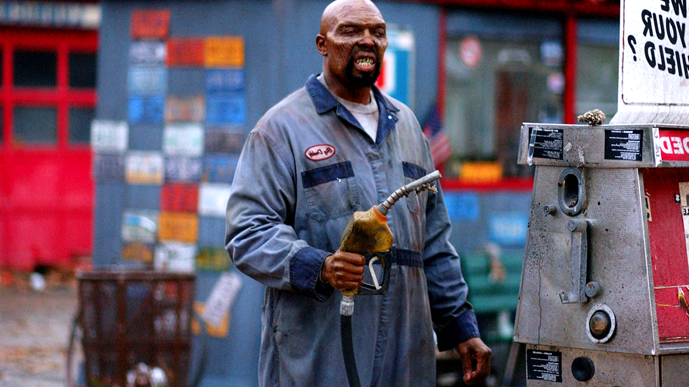
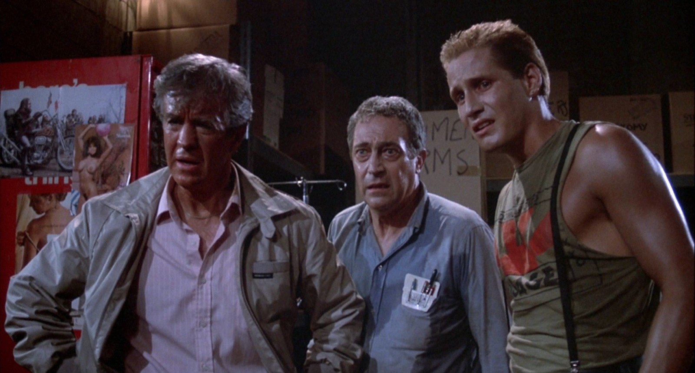
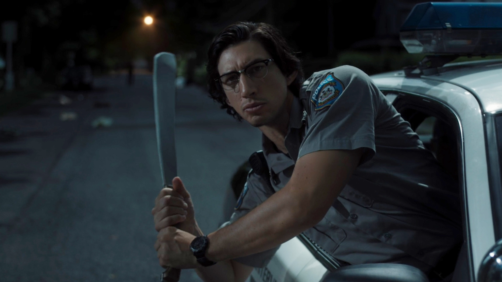
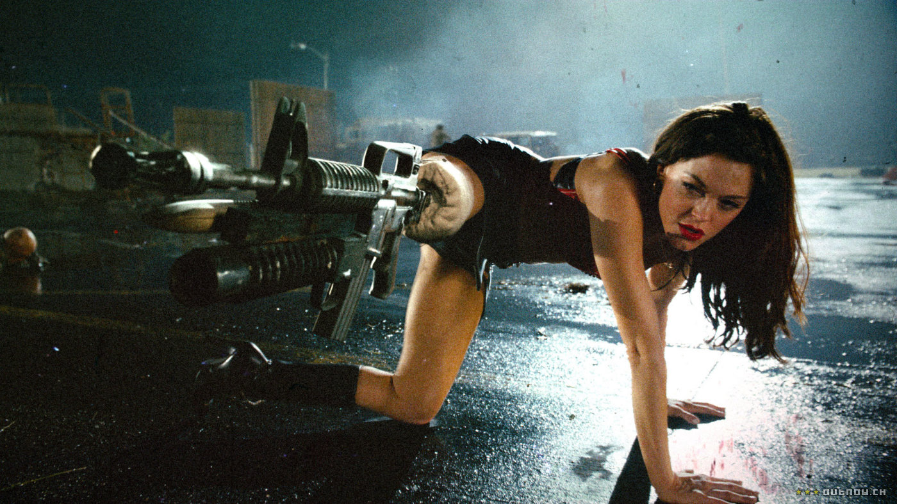
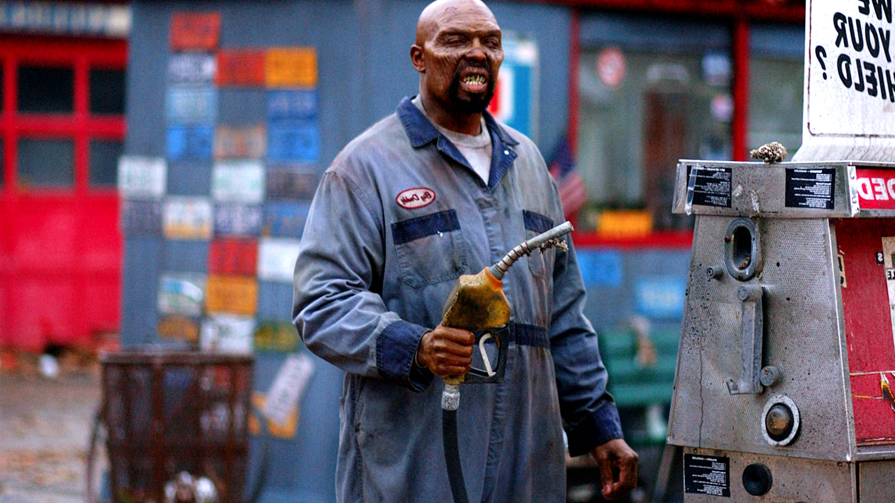
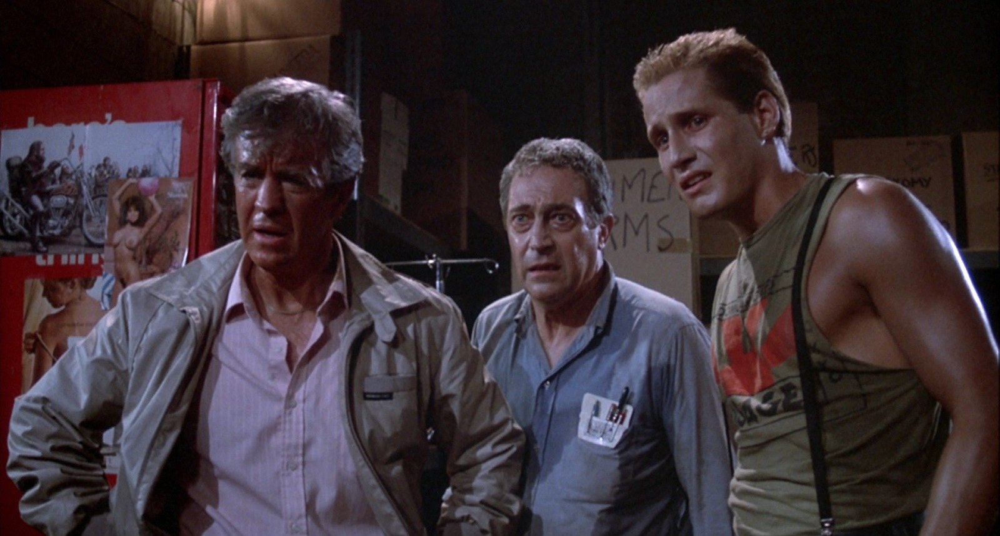
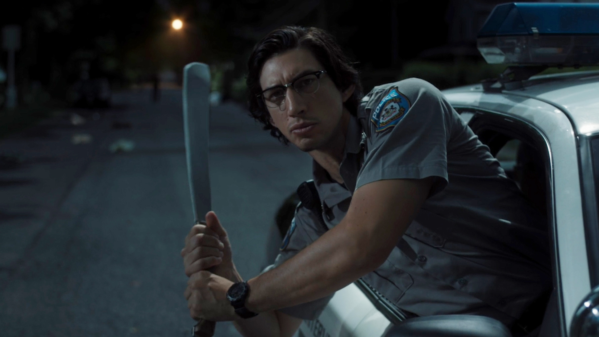
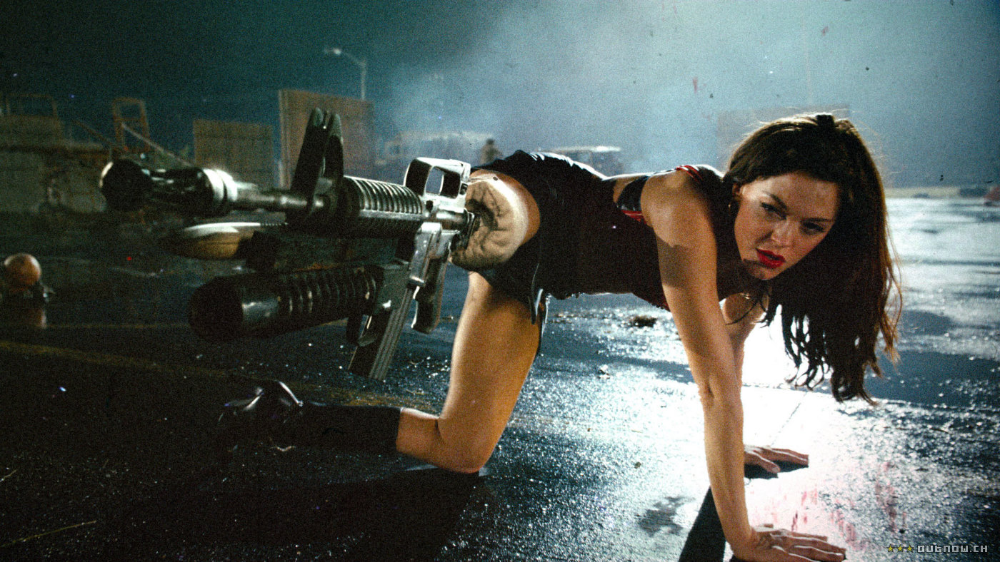

🚪 door 11 of the spell 🚪
zombies
lalala
meanwhile... indulge yourself with our 2025 edition of
the top 11 most delightful zombie flicks of all time:
the top 11 most delightful zombie flicks of all time:
- 28 days later (2002), by danny boyle
- night of the living dead (1968), by george a. romero
- dawn of the dead (1978), by george a. romero
- 28 weeks later (2007), by juan carlos fresnadillo
- 28 years later (2025), by danny boyle
- shaun of the dead (2004), by edgar wright
- day of the dead (1985), by george a. romero
- zombieland (2009), by ruben fleischer
- let sleeping corpses lie (1974), by jorge grau
- the return of the living dead (1985), by dan o'bannon
- zombie (1979), by lucio fulci
- re-animator (1985), by stuart gordon
- train to busan (2016), by yeon sang-ho
- fido (2006), by andrew currie
- dead alive (1992), by peter jackson
- pontypool (2009), by bruce mcmillan
- the girl with all the gifts (2016), by colm mccarthy
- the battery (2012), by jeremy gardner
- rammbock: berlin undead (2010), by marcel walter
- wyrmwood: road of the dead (2014), by kyle smith
- day of the dead: bloodline (2018), by herring swartz
- world war z (2013), by marc forster
- white zombie (1932), by victor halperin
- train to busan presents: peninsula (2020), by yeon sang-ho
- army of the dead (2021), by zack snyder
- the dead don't die (2019), by jim jarmusch
- juan of the dead (2011), by alejandro brugués
- yummy (2019), by devin funke
- black sheep (2006), by jonathan king
- i am a hero (2015), by shinsuke sato
- here alone (2016), by rod blackhurst
- zombie for sale (2019), by lee cheol-ha
- the night eats the world (2018), by domnique rocher
- blood quantum (2019), by jeff barnaby
- stalled (2013), by christian james
- the end? (2017), by gabriele lavia
- what we became (2015), by tomas montan
- the wailing (2016), by na hong-jin
- final cut (2022), by michel hazanavicius
- possession (2022), by kjetil johansen
- zombie reddy (2021), by prasanth varma
- the plague of the zombies (1966), by john gilling
- night of the creeps (1986), by fred dekker
- it comes at night (2017), by trey edward shults
- doomsday (2008), by neil marshall
- the girl who played with fire (2009), by daniel alfredson
- zombieland: double tap (2019), by ruben fleischer
- one cut of the dead (2017), by shin'ichirô ueda
- carriers (2009), by alexandre ajá
- [rec] 2 (2009), by jaume balagueró && paco plaza
- the crazies (2010), by brett ratner
- planet terror (2007), by robert rodriguez
- one cut of the dead (2017), by "shin'ichirō ueda
 







← back to the countdown